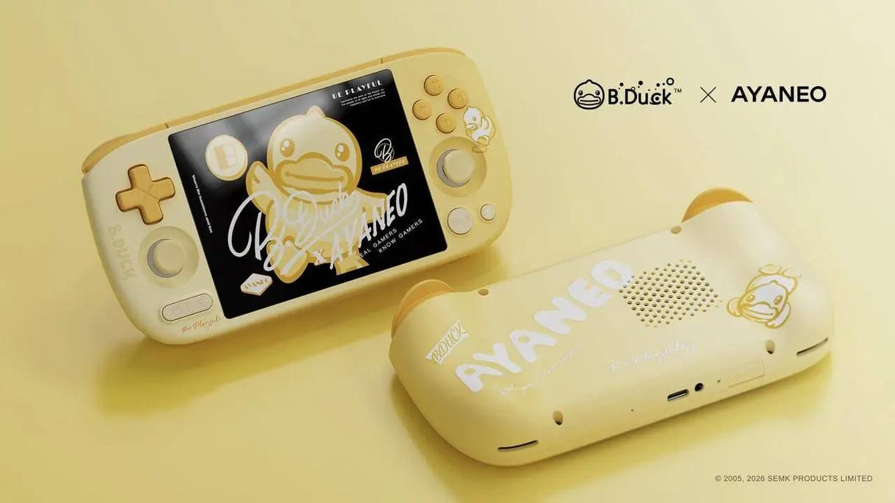

AYANEO 2021

国产 Windows 掌机先行者，7 英寸屏配摇杆握把设计。
客观评测
AYANEO 2021 是国产 Windows 掌机代表作，搭载 Ryzen 5 4500U 六核 CPU 与 Vega 6 集显，16GB 内存配 512GB SSD。7 英寸 1280×800 触控屏，实测《原神》中画质 45fps、《巫师三》低画质 30fps，跑 3A 吃力。配 Wi-Fi 6 与双 USB-C，AYA Space 支持 TDP 与按键映射调节，功耗 15-25W 可调。
主观点评
拿到手的第一感觉是扎实——一体式握把让 650 克的机身握起来并不累，摇杆阻尼适中，玩《空洞骑士》这类 2D 动作游戏格外顺手。Windows 系统的自由度令人上瘾，Steam、Epic、模拟器统统塞进去。但它也暴露了早期国产掌机的通病：散热噪音偏大、续航焦虑、系统级交互靠触摸戳戳点点。作为国产 PC 掌机的探路先锋，它证明了小厂也能做出可用的掌上电脑。
优点与不足
- Windows 系统兼容全平台游戏与模拟器
- 一体式握把设计手感扎实，摇杆精度不错
- 国产先行者，社区固件与配件生态活跃
- Vega 6 集显跑 3A 需大幅降画质
- Windows 触屏适配差，掌机模式交互繁琐
参数规格
| 屏幕 | 7 英寸 IPS，1280×800，多点触控 |
|---|---|
| 处理器 | AMD Ryzen 5 4500U，6 核 6 线程，2.3-4.0GHz |
| 图形 | Radeon Vega 6 集显，1500MHz |
| 内存 | 16GB LPDDR4x，4266MHz |
| 存储 | 512GB NVMe SSD，支持 M.2 2280 更换 |
| 操控 | 双摇杆 + 肩键扳机 + 背键，霍尔摇杆可选 |
| 系统 | Windows 10，配套 AYA Space 管理软件 |
| 网络 | Wi-Fi 6、蓝牙 5.0、USB-C×2 |
| 续航 | 12150mAh 电池，实测 3-6 小时 |
| 尺寸重量 | 255×106×20mm，约 650g |